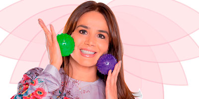
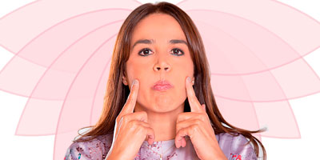
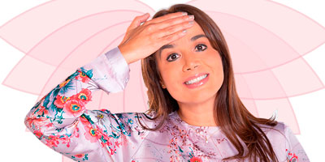
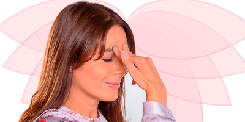
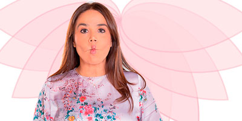

Yoga Facial
Con Claudia García
 @claudiagarciacirujana
@claudiagarciacirujana
 Claudia García Cirujana
Claudia García Cirujana
 Claudia García Cirujana
Claudia García Cirujana
Claudia es cirujana plástica y pionera de esta nueva técnica que promete excelentes resultados.
¿QUÉ ES Y EN QUÉ CONSISTE?
Esta milenaria técnica consiste en ejercitar los cincuenta músculos de la cara, cráneo y cuello haciendo distintos movimientos y estimulando la circulación de diversas maneras, según Claudia García, pionera de este método en Colombia, quien es cirujana plástica facial y otorrinolaringóloga de la Universidad de Antioquia, el procedimiento que no utiliza cremas ni químicos combate y previene las arrugas, ayudando incluso a mejorar la tersura de la piel.
- BOLITA DE LA FELICIDAD Se utiliza para el calentamiento de los músculos; formando círculos suavemente por todo el rostro y cuello pasando la bolita logrando así preparar el rostro para nuevas sensaciones.
- TROMPETISTA Este ejercicio mejora los surcos nasogenianos, es decir las líneas que se forman alrededor de la boca cuando sonreímos; deben tomar aire e inflar las mejillas tanto en el lado izquierdo como el derecho, sostienen 10 segundos por cada lado y luego los dos al mismo tiempo.
- PERSIANA Con la mano sobre la frente contraemos el músculo frontal elevando las cejas y sosteniendo con los dedos suavemente a nivel de la piel, realiza 10 elevaciones por 3 series, este ejercicio ayudará con las líneas de expresión que por lo general se presenta al momento de fruncir el ceño.
- LA MUJER PENSANTE Para el área del entrecejo donde suelen aparecer líneas de expresión, este ejercicio es ideal; sostienen con el dedo índice y medio a nivel de la cabeza de las cejas por 20 segundos y luego se realiza un movimiento en V hacia arriba, para mayor efectividad deben realizarse 3 series de 8 repeticiones.
-
EL SUEÑITO Este ejercicio ayudará atenuar las arrugas denominadas patas de gallina; con el dedo índice y medio en la parte externa del ojo abriendo y cerrando 10 veces por 3 series, ayuda a fortalecer el músculo orbicular de los ojos evitando esas molestas bolsas y ojeras.
- EL PESCADO Para los pómulos y mejillas este ejercicio es el mejor, contraemos las mejillas hacia dentro formando la boca de pescado y hacemos una sonrisa, 3 series de 8 repeticiones.
Estos son solo algunos de los ejercicios que podrán encontrar en el libro de esta doctora que a través de esta nueva técnica hombres y mujeres lograrán mejorar notablemente su apariencia generando un conocimiento profundo de los músculos faciales y permitiendo transformar emociones negativas en emociones positivas, al entender que cada expresión refleja un estado de ánimo. |